1961年より大量に増備された急行形気動車です。
大きな形態分類としては北海道向けのキハ56/キハ27のグループ、 信越線向けのキハ57のグループ それ以外の一般急行列車向けのキハ58/キハ28のグループがあります。
北海道向けグループのキハ56, キハ27, キロ26は酷寒地向けで、 2重窓を装備し床板は保温のため木製になっていました。
信越線向けグループのキハ57, キロ27は車体は一般急行列車向けグループと同じですが、 当時アプト式だった碓氷峠(横川～軽井沢)で軌道間に設置されたラックレールとブレーキ装置との 干渉を避けるため、台車をディスクブレーキを装備したDT31/TR68としています。
一般急行列車向けグループはキハ58, キハ28, キロ28, キロ58, キユ25です。
また、新製車ではありませんが北海道向けのキハ56を両運転台改造したキハ53(500番台)、 本州向けのキハ53を両運転台改造したキハ53(1000番台, 2000番台)も存在しました。 キハ53の基本番台はキハ58とは車体構造が異なるキハ23, 45のグループですからややこしいです。。。
製造が長期にわたるため製造途中で設計変更が行われており、 外観上目立つ変更としては登場時には平窓だった途中からパノラミックウィンドウになりました。 更にキロ28では雨樋の位置がキハ65と同じく低い位置に変更されてます。 外観上目立たない変更としては数知れず…。
JR化後も2000年を超えて活躍していたため末期はほどんどの車両が カラフルないわゆる地域色に塗り替えられ、こちらのほうが違いとしては目立ったかもしれません。
Nゲージ黎明期からトミックス(トミー)、KATO、永大(学研)から発売されていました。 トミックスと永大はパノラミックウィンドウのモデルチェンジ車で、当時の最新車両を 模型化した感がありましたがさすがにこれだけで編成を組むわけにもいかず。 トミックスのレイアウトプラン集でもしきりに登場するのですが (当時、トミックスが一般形気動車としてレイアウトに置けるのはこれだけでした)、 さすがにその編成ないんじゃね?という感じでした。
トミックスはその後、E253系に続くハイグレード製品としてパノラミックウィンドウ車をリニューアル、 KATOも平窓・パノラミックウィンドウをリニューアルして今に至ります。
キハ58系の2エンジンの普通車です。 2エンジン・片運転台の構成で、180馬力のDMH17Hエンジンを2基搭載しています。 床下はこの駆動用機器でこれでいっぱいになりトイレの水タンクはトイレの屋根の上に搭載されました。
主な番台区分としては0番台・400番台・1100番台・1500番台があります。
0番台・400番台は外観的にはざっくり同じで、運転台の前面窓が平面窓、平窓です。
0番台は初期に登場したタイプで、いわゆる原型です。
400番台は「長大編成対応」として空気指令(ブレーキ)は電磁給排弁により応答性を向上するとともに、
電気指令に対して補助リレーによる電圧降下対策を行ったグループです。
0番台では編成量数が9両程度に制限されていたのですが、最大15両を想定した設計となりました。
ちなみに0番台ものちにこの改造が行われて設備的には同様になっています。
1100番台・1500番台は運転台の前面窓がパノラミックウィンドウとなり、大きく変わりました。
車体構造も最初から冷房の搭載を考慮したものとなっており冷房準備車として登場しました。
屋根は平べたっくなり、屋根高さがやや低くなっています。
室内換気が強制通風式となり屋根からベンチレーターがなくなりました。
1100番台が暖地向け、1500番台が寒冷地向けです。
このほか800番台が修学旅行用として登場したグループで、0番台を基本としてます。 特定用途向けの改造により3000番台、5000番台、6000番台、7000番台など。
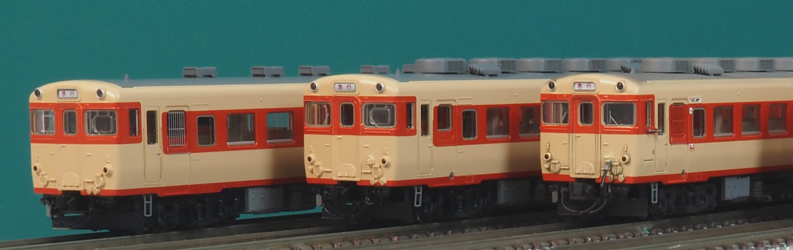
運転室側です。形態差というよりウェザリングの有無とか、タブレット防護柵、タブレットキャッチャーの 有無とかのほうが目立つ写真ですいません…。
左から0番台非冷房車(比較用)、400番台初期グループ、400番台中期グループ、400番台後期グループ、1100番台です。 400番台は細かく形態が変化していっており、区分をしはじめるときりがないです。 初期、中期、後期は完全に主観による分類になりますのであしからず…。
400番台初期グループは「アルプス」に含まれているもので、テールライトが内バメ式になってます。 目立つところだと運転席側面の下降窓のバランサ点検蓋がありません。 模型はちょっとデザインがごつくて外バメ式に見えなくもないのですが…。
400番台中期グループは549-で、運転席側面にバランサの点検蓋が追加されます。
テールライトは当初は内バメ式、途中から外バメ式に変化してゆきます。
トミックスが当初から単品で発売していたのがこのタイプ。
いろいろ言われてますが、テールライトが外バメ式の734-793あたりが
形態的には最も近いでしょうか。
キハ58は製造ごとに細かな設計変更がされており、これに使用線区や用途ごとの
細かな設計変更が入ってバリエーションは数知れず…
とはいえ、普通に目立つのは塗装の違いかもしれませんが。
外観上で間違い探し的に気付きやすいのはテールライトの形状、タイフォンの形状、
乗務員室直後の手すりの高さ、冷房用ジャンパ連結器の有無、
トイレ側(3,4位側)妻面の配電盤・ゴミ箱による凹みの有無、
トイレ窓の形状あたりでしょうか。これまた完全に主観ですが…。
細かいところだと標識灯掛けの形状、ジャンパ栓受けの位置など。
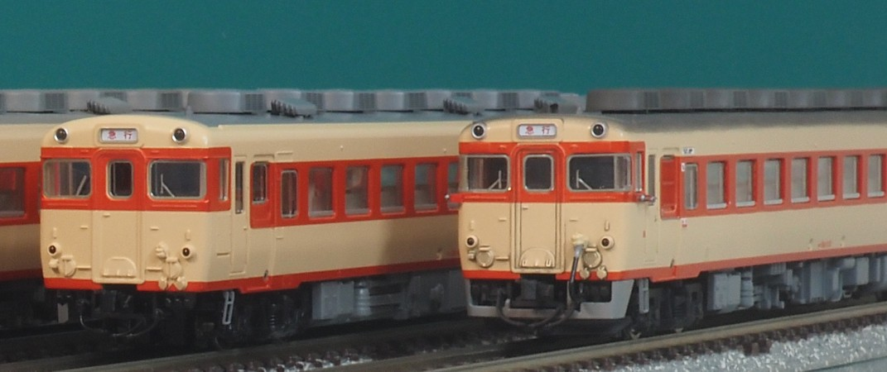
続いて400番台後期グループ、1100番台です。
400番台後期グループは便所の窓が横長に変更されたものですが、運転台側は中期グループから変わってないと思います。 794-799, 1000-1052で59両と意外と多いです。 比較的末期まで生き残っていたせいかトミックスがセットで多用しています。 少なくとも「のりくら」「紀州」「たかやま(6000番台改造後)」には含まれてたかと。
1100番台はパノラミックウィンドウになり、見た目が一気に変わります。 運転席付近の設計が変わり、助手席側のタブレットキャッチャーが前に飛び出して取り付けられています。
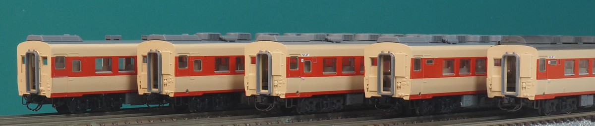
便所・洗面台側です。 左から同じく0番台非冷房車(比較用)、400番台初期型、400番台中期、400番台後期型、1100番台です。
0番台冷房車はいませんが(まだ製品がない)実物では存在します。 0番台も後に長大編成対応の改造が行われ、 400番台と混結されて使用されていました。 一部は冷房化されて、混ぜて使われています。 外観上の400番台との区別は、ドア下部の小窓くらいでしょうか。
非冷房車からの変化は冷房用配電盤の設置、冷房用ジャンパ(2個)の追加です。 また、くず箱が埋め込み式となり、これを避けるための出っ張りがあります。 新製時の追加は655～なんだそうですが実際にはほぼ追加されてるみたいです。
400番台後期(左から3番目)になると便所窓が横長・小型になります。 この時期のキハ52などにもみられる形態変化ですが、 変更のタイミングがパノラミックウィンドウとはタイミングがずれるのが面白いですね。
パノラミックウィンドウ車になると、水タンクも変わります。
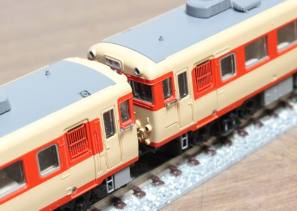
キハ58系の運用された線区は、登場時には通表閉塞(タブレット閉塞)の区間が多く 急行ですからタブレットの通過授受が行われていました。
のちのキハ40系になってもそうですが、設計時点からタブレットの通過授受が考慮されています。 運転台の後ろの客用扉にはタブレットの保護柵を取り付けるための凹みがあり、 車体にはタブレット保護板が取り付けられています。 また、乗務員室窓下にはタブレットキャッチャーを取り付けるためのボルトも設置されています。
客用扉のタブレット保護柵は通表閉塞区間で運用されるキハ58にはほぼ装備されていました。 タブレットキャッチャーは運用線区によりまちまちだったようですが、 概ね西日本(東海以西)の車両には取り付けられており、逆に関東・東北の車両には取り付けられていなかったようです。 タブレットはタブレットキャッチャーを使わなくても手で取ることができますので、 関東・東北ではほぼ手で取っていたのでしょう。 タブレットキャッチャーを使用するかどうかは運用線区によるようで、 最晩年の「砂丘」でも津山鉄道部はタブレットキャッチャー使用で、鳥取鉄道部は腕で取ってました。
で、パーツ取り付け。
カワマタのタブレットキャッチャーです。巷では有名な3ピース構成です。
エッチングで横から見ると平べったいのは若干気にはなりますが、上から見ることが多いせいかそれほどでもありません。 軸の部分は説明書では真鍮線を使うよう指示されていますが、ランナー引伸線を使っています。
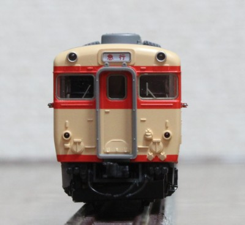
正面から見るとこんな感じです。 若干張り出しすぎ？ですが、実物も意外と張り出しています。
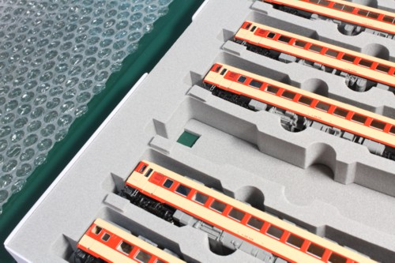
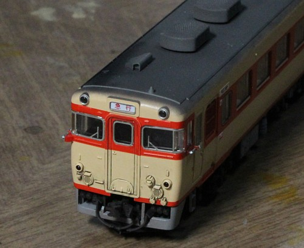
パノラミックタイプなキハ58・キハ65にもタブレットキャッチャーをつけました。 特にキハ65は松本を離れて以降分布がほとんど西日本だったので(東の端は名古屋?)、 タブレットキャッチャーが付いていないと締まりません。 タブレットキャッチャーが前に飛び出して付く助手席側が要工夫なわけですが、プラ小片を瞬間接着剤でつけて補強しました。 実物の台座はこんなに目立たないのですが、このサイズなのでしかたないです。
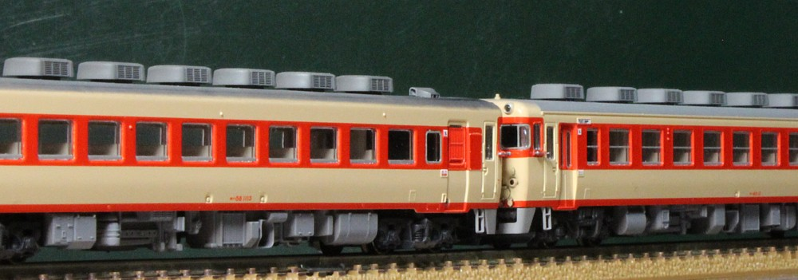
このキハ58、もう発売されてから20年になりますね。 当時KATOの前面窓が小さいことに気づいてなんとかしようとしていたところにこれが出たので、 これこれ、という感じでした。 KATOでは10系客車が発売されてからしばらく経ったころ。私は市場から消えたスロ62を慌てて探してました。
新製後に改造も行われており、こちらは目立つ改造としては冷房化があります。 屋根上に分散型冷房のAU13を搭載する形で冷房化が行われ、 冷房電源は1エンジン車で床下に余裕があったキハ28、キロ28に搭載した 冷房用ディーゼル発電機より給電するシステムでした。 前面には冷房制御用・冷房電源用のジャンパ栓が追設されています。
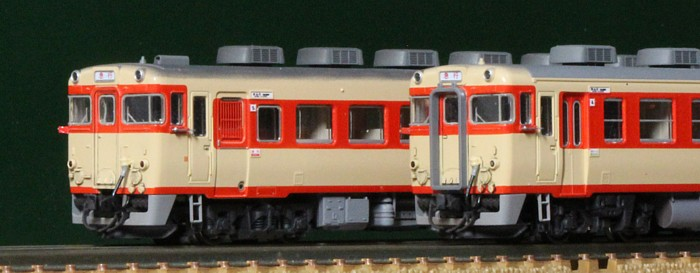
続いて冷房用ジャンパを別パーツ化。 KATO 14系のものを塗装してつけました。POMだけあって塗料の乗りは若干悪く、剥がれ気味ですが仕上がりには勝てません。
ドアレールと手掛けには、銀を。
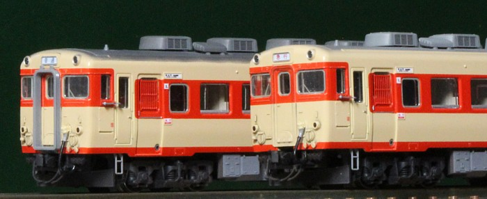
こちらは平窓車。 向かって左側の小型のものは、KE76を塗装してみたものの若干大きすぎ。 KATOがキハ58を製品化した時にASSYで手に入るんでしょう。その時にはキハ58ごと置き換わりそうな、気もします。
と書いた矢先、とうとうKATOからキハ58全面リニューアル発表… NGIさんにアップされたpdfを超拡大してみてしまいました。 扉の小窓あり、テールライト内バメ、標識掛けT字、バランサ点検蓋ありですから、474～654くらいでしょうか。 当然のごとくジャンパケーブルはフル装備でしたね。
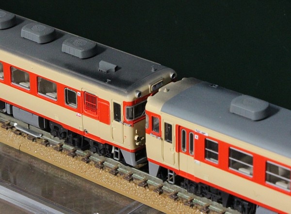
流れでウェザリングにもチャレンジ。 張り上げ屋根の肩まで汚さなければいけないキハ58が難関です。 つや消しクリアで下地を作ってから、濃い灰色(調色)を慎重に吹き付けました。 車体はちょっと浮かせてマスキングし、端をぼかしています。
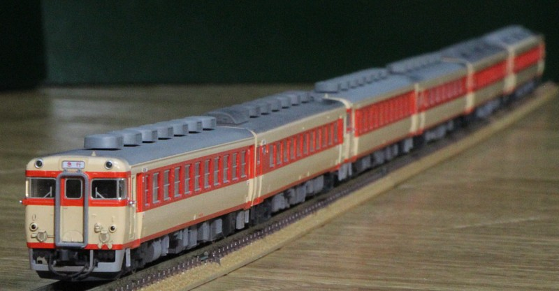
1エンジンの普通車です。 一般形ですと1エンジン搭載の車両が主力、勾配用に2エンジンな車種構成ですが 急行形のキハ58では2エンジンがメイン。キハ28はキハ58に混じって、 または、平坦線が多い千葉や常磐線に配置されました。
番台区分はキハ58に対応してますが0番台・300番台・500番台・1000番台です。 0番台・300番台はそれぞれキハ58の0番台、400番台に対応。 パノラミックウィンドウになったモデルチェンジ車が1000番台,500番台で、 それぞれキハ58の1100番台, 1500番台に対応します。
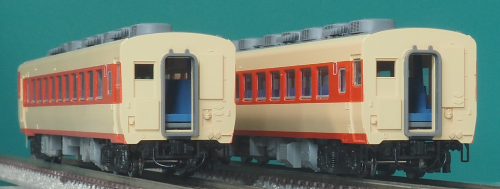
キハ28の初期車のグループです。 いわゆる「長大編成対応」していなかったため編成長は当初は最大で9両でしたが、 のちに改造により長大編成対応車と同様の装備となりました。
普通車の冷房化にあたり3両給電の4VKを取り付けており、車番は+2000されて2000番台となりました。
いきなり後側からの写真なのですが、左側が0番台、右側が2000番台です。
一般的なのは右側の2000番台のほうで、冷房化とともに床下に3両給電可能なディーゼル発電機(4VK)がつきます。
妻面の配電盤はディーゼル発電機の制御をするため給電を受ける側のキハ58よりもおおきなものとなります。
キハ58と組み合わせて使用されました。
一方、平坦線である常磐線や房総では1エンジン車がメインで配置されていたため
全車両に4VKを搭載するのはもったいなく、わずかながら冷房改造されながらも他のキハ28/キロ28から給電を
受けるタイプの車両が存在しました。番号はそのまま0番台になっており、これが左側。
妻面の配電盤もキハ58と同じサイズの、小さなものになっています。
トミックスの「ときわ」「奥久慈」でラインアップに加わりました。
このセット、10両編成を購入するとキハ58 x 2、キロ28、残り7両はキハ28でそこに3種類が入っており
なんというか、その違い気づくんですかね…的なセットではあります。
製品からは、窓の断面に赤を入れたりデッキの裾をプリ整形したりと、ちまちま手が入ってます。
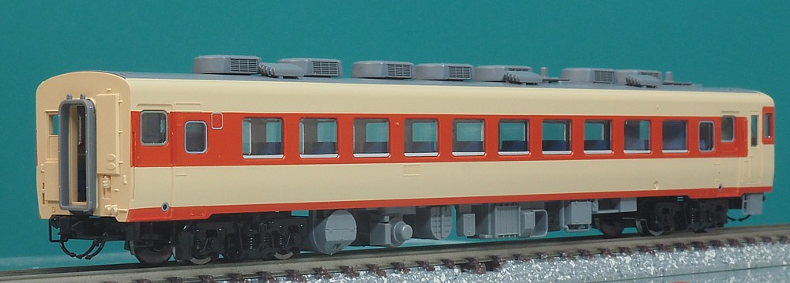
長大編成対応したグループで、キハ58では400番台に対応します。 冷房化に伴いディーゼル発電機(4VK)をつけ2300番台となります。 床下には発電機、側面にはルーバーが設置されました。 キハ28はナンバーが後ろからの写真ばかりなんですが、まだ前面は各種ケーブルをつけてなくて 穴だらけでお見せできないという事情ではあります。 とはいえ前面からの写真をとってもパット見違いわからない(運転席下部にエアータンクがあるかないかくらい) で、 こちら側のほうがある意味キハ28っぽいので、 各種ケーブルを取り付けてもおそらく写真は変えないかなと思います。
キハ28の寒冷地向けモデルチェンジ車のグループです。
501-504は「普通の」寒冷地用のモデルチェンジ車です。 冷房準備車であり、クーラー塞ぎ板でクーラーを塞ぎ、妻面には4VK対応の配電盤のスペースまでありましたが 結局冷房化されずに一生を終えました。
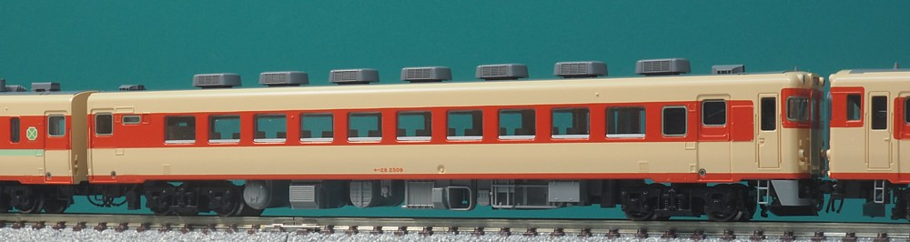
で1505-1510です。中央東線の急行「アルプス」を冷房化するために登場したグループ。
いきなり505-ではないのですが、これは新製当初から4VK装備で冷房化されていたためで
非冷房の505-510と区別するために番号が+1000されていました。
後に4VK搭載車は源番号に+2000するルールが運用されはじめると、それに合わせて2505-2510に改番号されています。
中央東線は25‰の勾配が延々と続き、特に甲府から信濃境までは600mを一気に登ります。 気動車にととっては過酷で、非冷房の時代から編成全体を2エンジン車としていました。 キハ58ではグリーン車は1エンジンのキロ28でしたが、「アルプス」用の専用の 2エンジンのグリーン車、キロ58が製造されています。
非冷房のうちは全車2エンジンの編成で問題なかったのですが、 冷房化にあたりキロ58にはディーゼル発電機が搭載できません。 そこで製造されたのがこのグループ、1500番台でしてまだ普通車の冷房化が本格的にはじまる前に、 床下に3両給電可能なディーゼル発電機(4VK)を搭載して連結された2両のキロ58の冷房電源を 供給できるようになっています。
のちに普通車の冷房が進み始めるとキハ28に4VKが搭載されてゆくのですが、そのグループとは なぜかディーゼル発電機の搭載方向が逆向きになっていました。 なので、車体側面にある空気取り入れ口の向きがそれ以降のグループとは逆になっています。
ちなみにキロ28でも4DQ→4VKに改造する際にディーゼル発電機の搭載方向が逆にされるのですが、 キロ28では旧空気取り入れ口がふさがれ新たに反対側に空気取り入れ口を新設しました。 一方でキハ58-1500では最後まで4VKはほかのグループとは逆向きに搭載されたままでした。
中央東線の急行アルプスは飯田線や小海線、大糸線の直通乗り入れ急行を併結していたため 中央東線の電化後も長く1975年まで生き残り、2500番台も松本に配置されて活躍していました。 廃止とともにあちこちに散っています。
キハ58系列のグリーン車です。
普通車が直角のクロスシートだった時代、津々浦々の急行にほぼ連結されており結構な数がいました。 その後普通車のほうがリクライニングシートに変わりグリーン車の存在価値が徐々に減ってゆき、 急行そのものもなくなってゆくわけです。 とはいえ末期まで残った「砂丘」「丹後」などにも連結されており 特急列車が2両で走るその後の時代と比べるとまだ地方の鉄道はそれでも元気でした。
番台区分はキハ58/キハ28に対応して行われています。 基本番台(0番台)、長大編成対応の100番台、 モデルチェンジ車の300番台/更に寒冷地用の500番台となります。 このほか100番台末期ではトイレの窓が横長になるのもキハ58/28に対応しています。
キハ58の冷房化にあたっては編成としての冷房化よりも先に「キロ28だけ冷房化」が行われたため、 当初はディーゼルエンジンとして1両だけ給電可能な4DQが搭載されていました。 普通車を含めた編成全体の冷房化が進展してしばらくも、 1両給電のまま冷房用電源・制御回路のの引き通しだけの追加が行われており、 その後1979年頃より3両給電の4VKに発電機を換装しています。 4DQを搭載した車両は番号に+2000をしていますので、 2000番台(0番台), 2100番台(100番台), 2300番台(300番台), 2500番台(500番台) となります。 これも最後まで全車両には実施されず、4DQのままだった車両もいました。
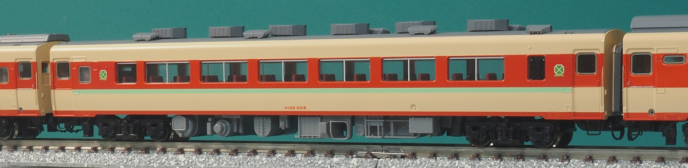
非冷房として新製されたグループです。85両(1-85)製造したところで100番台に移行しました。 キハ58/28と同じく屋根上に箱型ベンチレーターを搭載しており、 冷房化の際の工事もキハ58/28と同様で、AU13と押込型ベンチレーターに変わります。
模型は非冷房のキハ58欲しさに購入したキハ57のおまけです。
キロ27が2両も(←だって非冷房のキハ58がたくさんほしかったのです…)あるので、それをキロ28-0に改造しました。
屋根にAU13と押し込み型ベンチレータ載せました。配置はキロ58を参考に。 100番台と0番台って、クーラーの取り付け位置が微妙に異なってたのですね。
床板はキハ28用で、4VK装備です。台車もDT22に交換。
車体は雨樋をクリーム色に塗りつぶし。側面には発電機用の空気取り入れ口が要るのですが、いまのところ省略。。。トレジャータウンのパーツに含まれているので、 そのうち取り付けようかと。
トミックスのキロ28、客室の窓ガラスはおしなべて「つまみ」が付いたタイプで作られてるのですが
キロ28-0、キロ58の窓ガラスは実際には窓ガラスの上部サッシに止め具が付いたタイプです。
鉄道ピクトリアルの写真をひたすらまじまじ見てました…。
で、窓ガラスをKATOのキロ28(旧製品)のものに交換しました。
これで雰囲気が結構変わります。
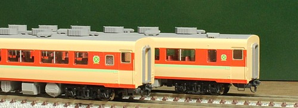
キロ28-0。グリーン車マークはくろま屋さんのものですが、大きさを2通り使ってみました。
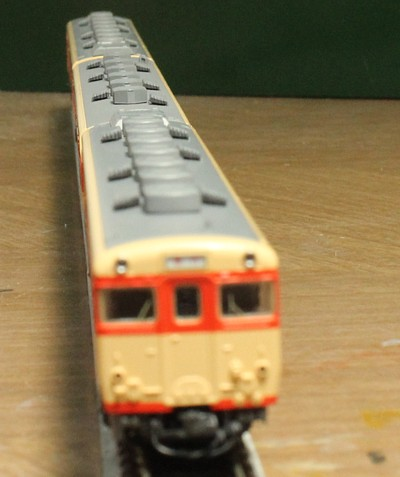
ベンチレータ付きの屋根が並びます。
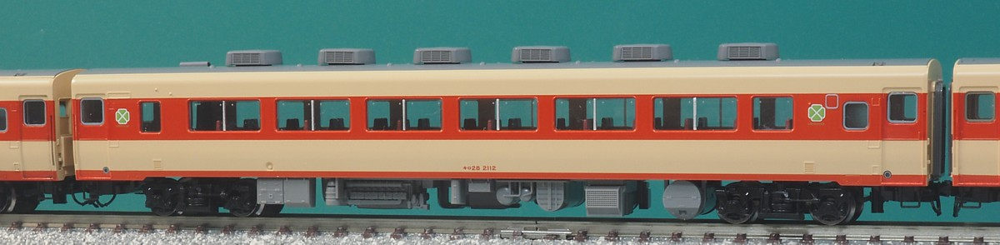
100番台の長大編成対応車では109～が冷房準備車として新製されたグループになりますが、 このうち109～138はAU12での冷房化が予定されていたため 車体断面は非冷房車と同じとなっており、当初からAU13による冷房化を考慮した設計となっている139～と 比べると屋根が高くなっています。
室内は強制通風式となり屋根上のベンチレーターはなくなっています。 かわりにというか、蛍光灯を冷却するための小型通風器が並んでいます。
模型はトミックス「ときわ」に含まれるもの。 水戸にいたこのグループの2112, 2125はともに台車がキハ81発生品である、空気ばね台車のDT27に振り替えられています。 キハ81、登場時には踏面ブレーキのDT27(TR67)を装備していたのですがブレーキ力の不足が問題となりディスクブレーキの DT31B(TR68A)に交換されています。この際に発生したDT27をキロ28がもらっているわけです。 模型の台車はディスクブレーキっぽい表現になっており、キハ82の台車まんまですかね。。。
基本的には製品そのままなのですが、 ドアの沓ずり部分の謎の面取りを除去したり、窓の断面に赤を色入れしたりとちまちま。 窓の断面の赤の色入れは以下キロ28全車両でやってるほか、 キハ58やキハ28でも共通で実施しています。
ちなみにですが、長大編成対応車でも101-108までは非冷房車として新製されており、 このグループは外観上はほとんど0番台と変わりません。(ドア下に丸窓が追加された程度)。
キロ28のほうもまぁ細かく設計変更されながら製造されます。 139-はAU13に対応した設計となっており、屋根が低くなりました。 車体構造的にはキハ58/28のモデルチェンジ車と同じになります。
キロ28の1段下降窓は雨水が窓から車体に入るため腐食しやすく、 一部の車両ではその対策として窓をユニットサッシに改造していました。 このグループに限らずキロ28全般にこの改造を行った車両は存在し、 また、サロ165やサロ455など同時期の急行形サロでもこの改造は行われています。 下降窓による車体の腐食対策でユニットサッシ化されたものですが、 本来の広い窓が台無しで、もし乗ってこれに当たったらさぞかし残念がったことでしょう。
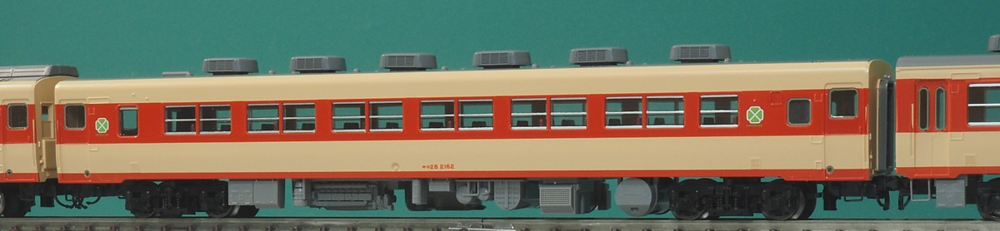
155～では、エンジン冷却水の給水口が車体中央部に移動しています。 模型は「きのくに」に入っているもので、このグループに該当します。
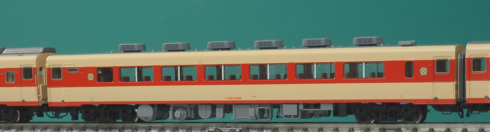
196～202は100番台の最終グループで、トイレの照明が蛍光灯化されたことから トイレの窓が横長の小さいものに変更されています。
そのものずばりは製品化されていないのですが、車体はキロ28-2300まんまなので、 これにキロ28-2100の屋根と床下を組み合わせるとこのグループになります。 床下は正確には機関予熱器が大型のものになってて違うのですが、まぁ…。 キロ28-2300の床下に、水タンクをキハ28のものに交換したほうがよいかもしれません。 交換可能な構造になってるので、パノラミックウィンドウ車が発売されたら買ってきて交換しようと思います。
2301-2308, 501-507の車体構造のグループです。 このグループの寒冷地向け500番台は、4DQのまま一生を終えたため2500番台にはならず、500番台でした。 細かいところでは、501-507は発電機用の空気取り入れ口が模型とは反対2-4位側にあるそうです。 というか、2301-2308も300-308だったころ(4DQ時代)は空気取り入れ口は逆側にあったのですが 4VKに換装される際に逆側に移設されてるんだとか。
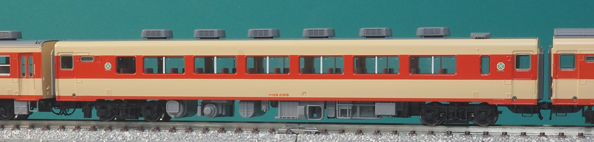
実物が8両しかないのになぜにこの選択…、というのがありましたが、キハ58-1100と時代を合わせたかったのでしょうか。 トミックスがキハ58をリニューアルした末期にはキロ28はだいぶん数を減らしており、 このグループのシェアも高かったのかもしれません。まぁこの時代はというと、 結構な車両がユニットサッシ化改造を受けてるんですけどね…。
模型は製品まんま。 クーラーの配置がエラーで、2020年頃のロットでしれっと修正されました。 車体は初期ロットなのですが、修正版の屋根と入れ替えてます。 修正されていることを知って市場在庫を漁った時には帯ありだけが残ってました…。
同時期のキハ65/12系と同じ車体構造です。
ややこしいのはここからで、この車体構造を持ってるのは2500番台(500番台)の18両のうち
2508-2518の11両で、501-507はキハ58/28と同じ張り上げ屋根でした。
逆に2300番台(300番台)の2309-2314はこの製品の構造ですので、
該当するのは2309-2314, 2508-2518となるわけです。
キハ58, 28の運転台がパノラミックウィンドウに変わったモデルチェンジ車のと同時に製造されたグループで、 新製時には暖地用の300番台・寒冷地用は500番台でした。 のちに自車を含めて3両に給電可能な4VKを搭載して2300番台・2500番台になってます。
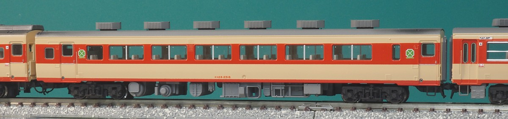
模型はトミックスからキロ28-2500として発売されているもの。 まぁ製品名を2508-とするのも微妙ですし、キロ28-2300として既に2300番台、2500番台前半の車体構造の製品は 製品化してましたから、2500となるのでしょう。 ユニットサッシのキロ28ともども、「たかやま」で製品化したキロ28-6001, 6002の塗り替え?的な展開には感じました。
例によって製品そのまんまにみえるこの写真ですが、裾の赤帯を再塗装しました。 トミックスのキハ58-2500、なぜかこれだけ裾の赤帯の幅が太く、気になりだすとしかたありません。 再生産のたびに模型店でチェックするのですがどれも似たようなもので、おそらく版がそうなってしまっているんでしょう。 で、裾の赤帯を剥がして再塗装してみました。
赤帯だけ再塗装…といけばよいのですが 赤色を拭き取る際に成形品の地肌が見えてしまうのでクリーム色ごと再塗装しています。 腰板部のクリーム色4号を再塗装。FARBEのクリーム色4号をベースに白を結構たくさん(1:2くらい?) 混ぜたうえで、 原色イエローをほんのちょこっとだけ加えるとよい色になりました。
あとは地味にクーラーを角型に交換。 鉄道ピクトリアルでキロ28-2510が角型クーラーをつけてるので触発されてやったのですが、 実際には角型クーラーをつけてる車両、時期はごくわずかだったそうで…。
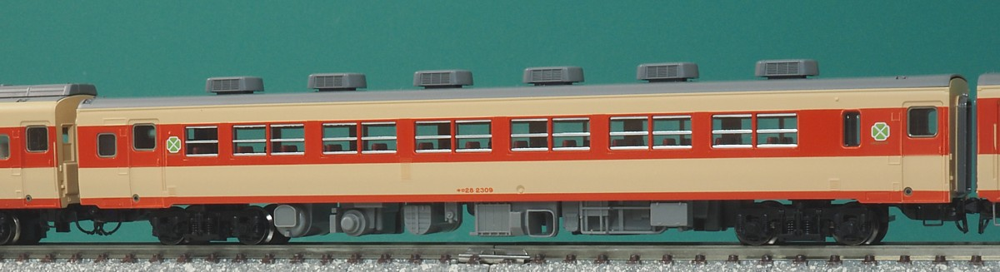
ユニットサッシ化されたタイプです。
「のりくら」として発売されました。 ユニットサッシ化されてさらに通常は幕板部にある冷房用ディーゼルエンジンの吸気口が 腰部にあるという姿で模型化されており、実はこの製品、まさかの特定番号。 付属のインレタもキロ28は番号はひとつだけ、2309だけというこだわりようでした。
勾配線区用に2エンジンを搭載したグリーン車です。 勾配線区って要するに中央本線、列車はアルプスです。 ほぼ特定列車向けで、8両が製造されました。
中央本線が電化されるとアルプスは削減されてゆき、 同じく勾配線区を受け持つ名古屋・美濃太田に転出して「赤倉」「きそ」として使われています。
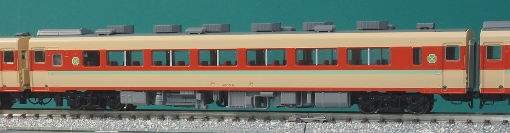
「アルプス」で製品化されました。 このセット、キハ65-500、キハ28-2500、キハ58-400、キロ58といずれも新規金型で結構お買い得です。
ちなみに超細かいのですが、実物のサッシはおそらくツマミで下げるタイプではなく 両側に留め具があるタイプでは?(上縁にサッシが見える)と思います。 キロ28で先行実施してうまくいったので、こちらにも展開予定なんですがタネ車が足りない…。